Case study 04 · Game UX & Distribution for 3.6M+ Players
Warden Creations: community-driven game UX & distribution for 3.6M+ players
What started in 2017 as building custom Minecraft maps for my best friend grew into Warden Creations: 11 released add-ons, 3.6M+ downloads, a 64K+ subscriber YouTube channel, and a 6,000-member Discord community. Here is how real player feedback shaped custom in-game tooltip UX, packaging for click-through, and the hard lessons learned from chasing trends.
Game code, art, and video from one production loop
I built Bedrock gameplay systems with JavaScript and JSON behavior packs, and made custom models and textures in Blockbench. For each release I recorded footage and managed scenes in OBS Studio, edited in DaVinci Resolve with Fusion compositing and Fairlight audio, and made thumbnails and promotional graphics with Photoshop, Paint.net, and Canva.
Players never read the manual
In modded Minecraft, creators routinely expect players to keep an external wiki open in a browser tab just to play the game. If you pick up an unfamiliar weapon and have to Alt-Tab out of full screen to discover its swing speed, windup duration, and status ailments, the game design has offloaded its job onto the web browser.
How do you communicate deep, non-standard combat mechanics entirely inside a 16×16 pixel game HUD without breaking immersion?
From building maps with Devin to Minecraft Fortify
I started creating content back in 2017 with my best friend, Devin Leung. For three years we built custom challenge maps, recorded our playthroughs, and co-edited gameplay videos. Designing for Devin taught me my first rule of player psychology: you cannot explain the joke. If he got lost in a dungeon hallway or missed an objective, the map was broken—no matter what my notes intended.
In June 2021, I shifted from adventure maps to Minecraft Bedrock add-ons under the name Warden Creations. My journey started with Minecraft Fortify, a massive overhaul designed to fix Minecraft's stale armor and weapon progression. Fortify became my breakout project, reaching hundreds of thousands of survival players and laying the architectural foundation for everything that followed.
That momentum culminated in Simple Arsenal, where I pushed combat further with modular weapons and custom crafting benches. When Simple Arsenal dropped, downloads surged from a 200/day baseline to 39,267 downloads in 2 days on CurseForge alone.
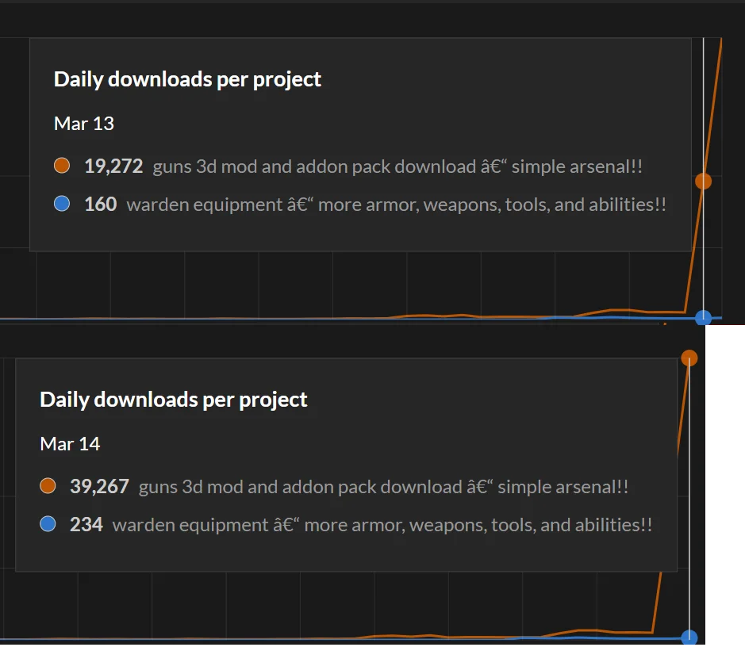
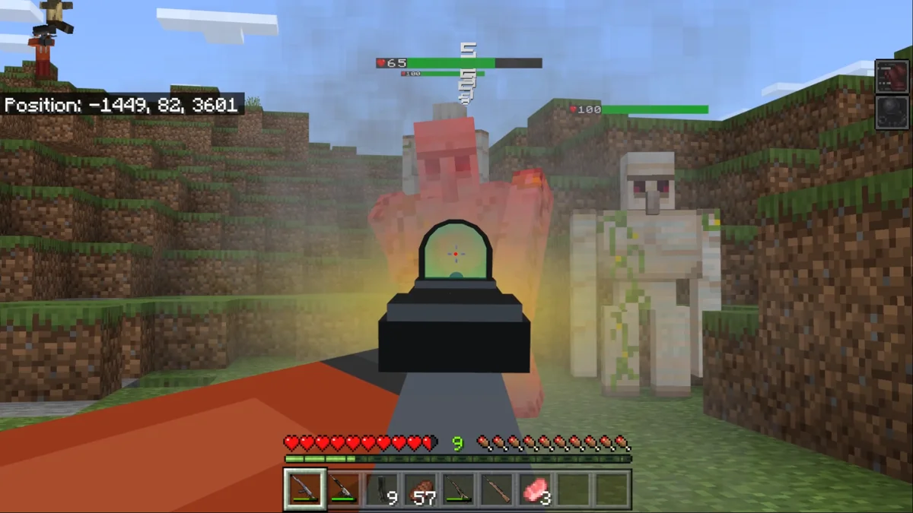
The "Wiki-in-a-Tooltip" system
Minecraft Bedrock's native UI is rigid: item tooltips only display a title and default durability. For complex add-ons like Minecraft Fortify and Simple Arsenal, weapons had distinct mechanics: windup charges, swing animations, cooldown windows, area-of-effect whirls, and status procs (poison, stun, bash).
Rather than directing players to a fandom wiki or Discord FAQ, I engineered an in-game tooltip specification. By overriding Minecraft's font sheet with custom Unicode private-use glyphs (glyph_E0), I injected custom 16×16 pixel-art iconography directly into native item descriptions alongside standardized color-coded rarity tiers.
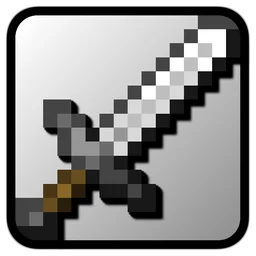
Base DamageDirect hit output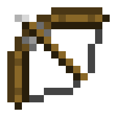
Windup TimeCharge before release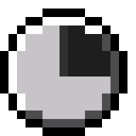
CooldownRecovery window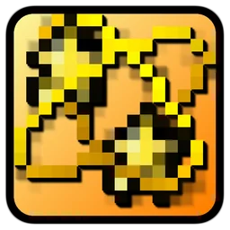
Stun ProcMob disable duration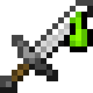
Poison / DoTDamage over time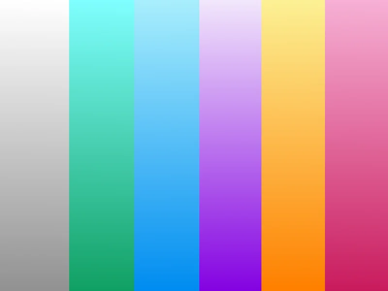
Immediate comprehension
A player hovering over an Aetherite Greatsword immediately reads: Attack 12, Windup 0.4s, Cooldown 1.2s, with badge glyphs that match their physical weapon animations.
Testing in play sessions confirmed that players stopped asking "what does this weapon do?" and instead asked strategic gameplay questions: "which weapon counters armored vindicators?"
Thumbnails as software packaging: 8.9% to 17.7% CTR
A software update does not exist if nobody downloads it. On YouTube, thumbnails are the digital box art. I approached thumbnail design with strict visual hierarchy rules:
- One headline, max 3 words: Rendered in high-contrast pixel typography with drop-shadows so it's readable at 80px thumbnail width on mobile screens.
- Item hero placement: The newly added equipment is isolated and rendered at 2× scale, tilted to show 3D perspective and depth.
- Zero misleading clutter: Red arrows were only used when pointing to genuine game UI mechanics (like crafting grid slots), not random red circles.
I iterated thumbnails across versions by studying audience retention drops and click-through analytics from previous releases. Across six releases, these thumbnails drew 8.9% to 17.7% CTR across 1.67M impressions.
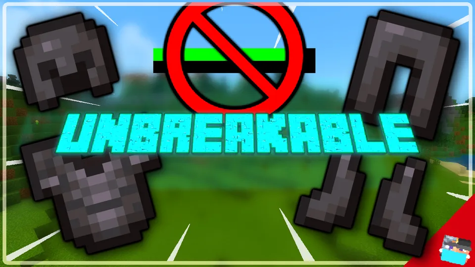
20.5K views
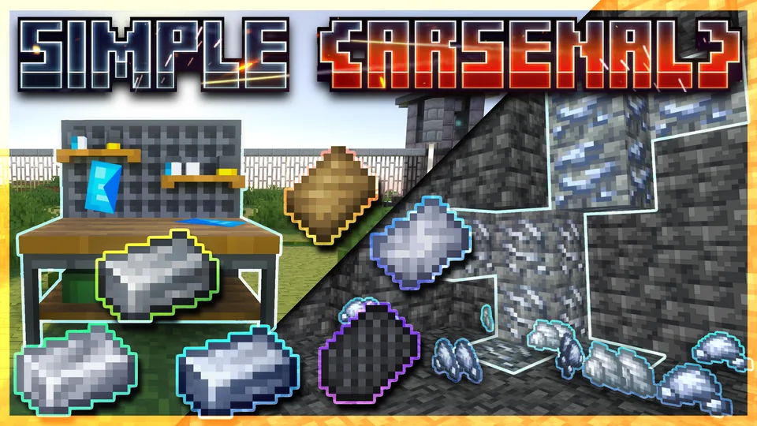
137K views
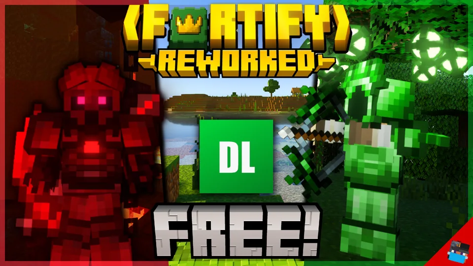
163K views
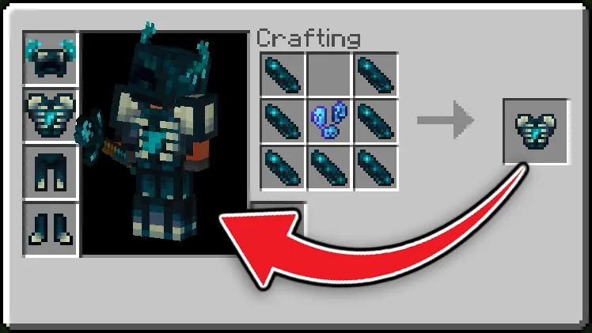
48K views
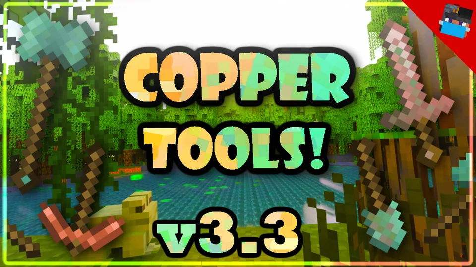
19K views
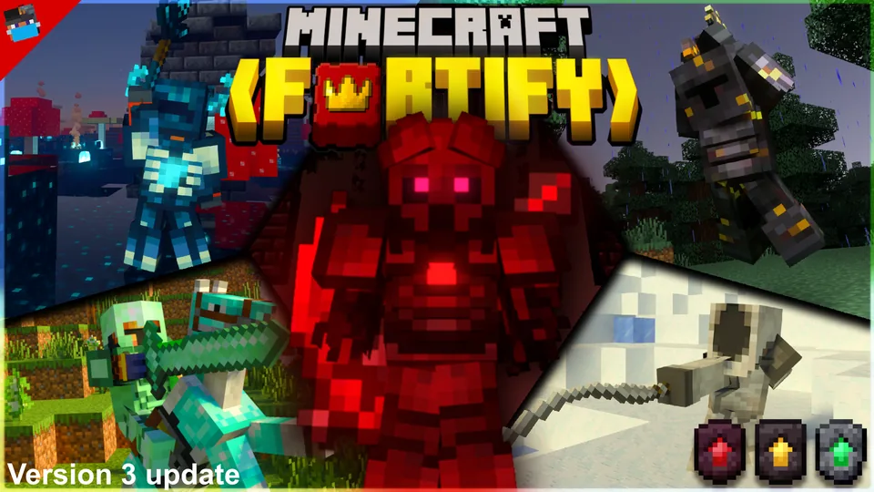
90.2K views
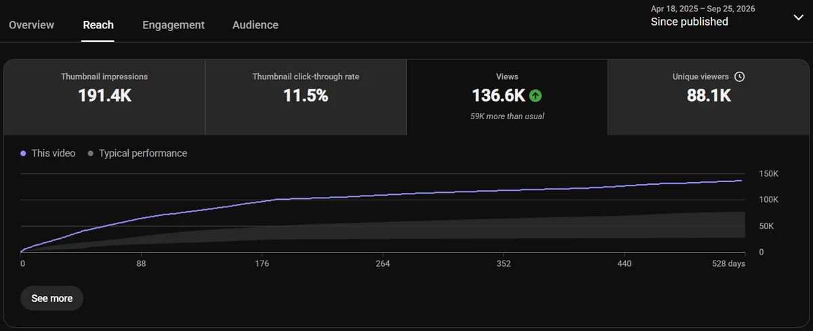
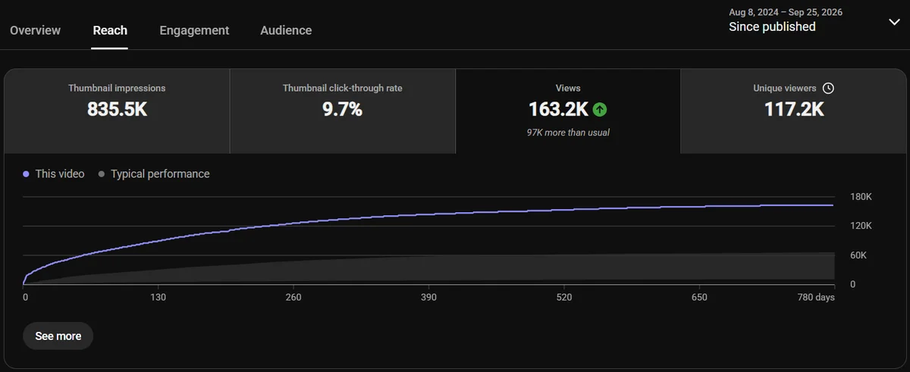
Don't chase trends: why Copper Golem and Armor Trims failed
Not every project worked. In late 2021, when Mojang held the Minecraft Mob Vote, I rushed out a Copper Golem add-on. Shortly after, when Mojang announced Armor Trims, I rushed out an Armor Trims add-on to ride the news cycle.
Both underperformed compared to everything else on the channel. The retention was weak and players uninstalled them quickly.
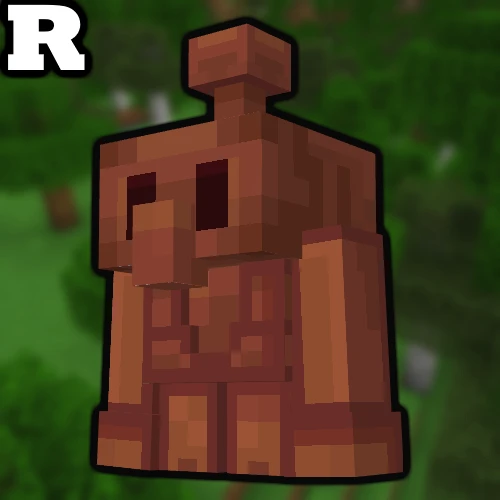
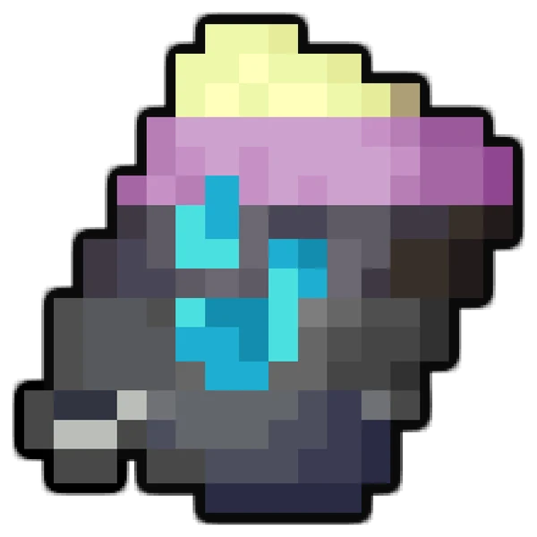
The design takeaway
When you chase a short-term trend, you are building for curiosity, not utility. The moment players tried the Copper Golem, they realized it had 10 minutes of novel behavior and zero survival progression. It didn't solve a player problem.
By contrast, Minecraft Fortify and Simple Arsenal succeeded because they filled a permanent gap in Minecraft's combat sandbox: progression pacing, specialized roles, and in-game clarity. My design takeaway was permanent: never build for hype; build deep, unique systems that players actually depend on.
Continuous feedback: Discord and YouTube as the usability lab
Without access to a formal UX research lab, I turned my community into an agile feedback loop. I ran a 6,000-member Discord server structured into dedicated channels for announcements, questions, suggestions, and bug reports, and personally replied to over 1,100 YouTube comments.
Real player interactions drove both game balancing and interaction design:
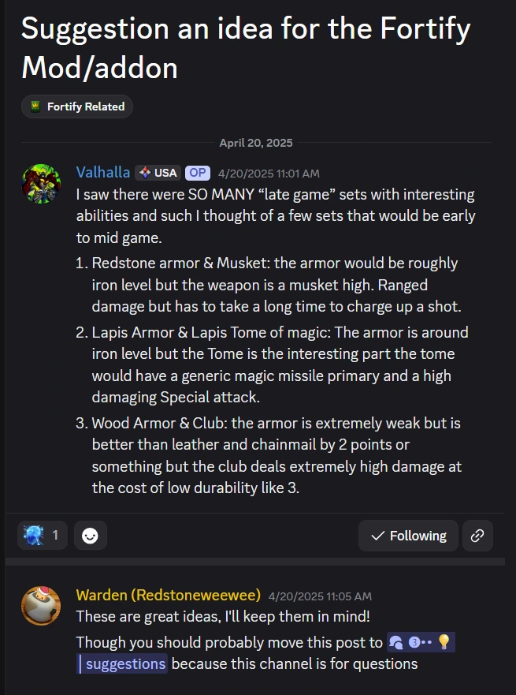
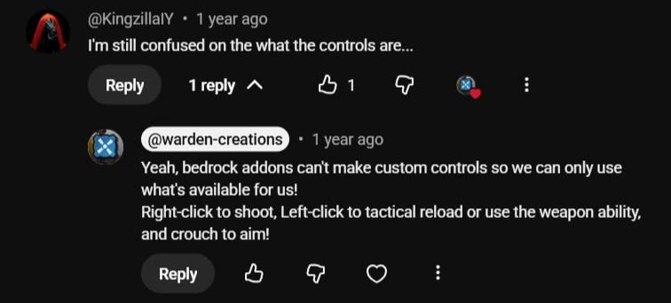
Why direct replies mattered
When an engine doesn't allow custom key rebinding, player confusion is inevitable. Replying directly to players like @KingzillaIY helped demystify the controls and informed how I structured tutorial text and tooltip action verbs in later updates.
Meanwhile, suggestion threads from players like Valhalla highlighted blind spots in progression pacing that no single creator notices while testing in creative mode.
Over 1,100 individual comment replies and hundreds of Discord threads directly shaped the update changelogs.
Closing the creator chapter
Warden Creations reached its peak in 2025 with the release of the Simple Arsenal overhaul (138K views). Managing 11 active add-ons, thousands of weekly player reports, and regular video production was equivalent to running a live-service game studio as a solo creator.
As my university studies advanced at UC Santa Barbara, I intentionally sunset major add-on development to channel everything I learned about usability, responsive feedback, and systems design into software and product engineering: developing the Daily Nexus mobile apps, building Uncoded Resolve, leading design on Eezy Receipt, and co-founding Hedron³.